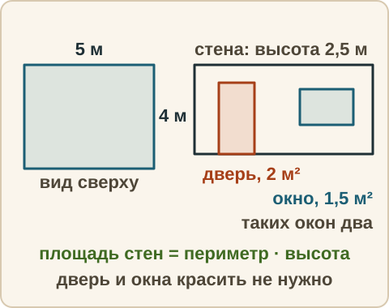
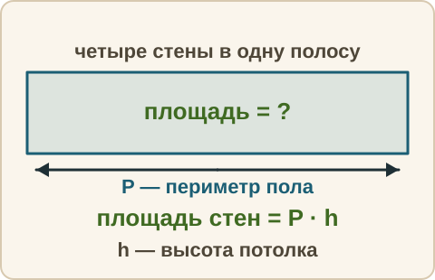

Математика: база · занятие 18Практический блок: краска для стен
Цель: ты читаешь один жизненный текст со схемой и таблицей и отвечаешь на пять вопросов подряд: прочитать значение, выбрать, вычислить, посчитать процент, сравнить варианты. Все пять заданий — по одному тексту, ответ каждого — число. Это образец заданий 1–5 ОГЭ. Ответы и подсказки спрятаны: сначала реши сам, потом нажми кнопку.
Как записывать ответ. Число — целое число. Дробь — через черту и сокращённая до конца, например 3/4. Десятичная дробь — с запятой, например 3,25. Ответ практического блока — число в тех единицах, которые просят в вопросе (рубли, килограммы, проценты).
Вспомнить
Без подсказок, сразу проверка. Отмечай, на чём споткнулся, — в журнал.
- В бассейне в субботу 90 человек, в понедельник 40. На сколько человек больше в субботу?
- По графику температура в 12 ч была 14 °C, в 15 ч — 17 °C. На сколько градусов она выросла?
- 12 % от 250
- 2/5 + 3/10
- 3,6 : 0,9
- 8 − 3 · (2 + 1)
Беглость: числа из условия
Игра «числа из условия». Назови результат. Ошибся — пример вернётся: попробуй ещё раз. Без таймера. Эти числа пригодятся дальше — заметь, где они встретятся.
- 0,15 · 40
- 6 · 2
- 2,5 · 4
- 45 − 5
- 1900 + 600
- 1050 · 3
Правило
Как решать практический блок. Блок — это один текст, схема или таблица и пять заданий. Все пять про один сюжет, поэтому текст читают один раз внимательно, остальное — выписывают.
- Прочитай весь текст, ничего не считая. Скажи вслух: о чём он.
- Выпиши числа с единицами: что даётся (длины, цены, расход).
- Найди в тексте формулу или правило (например, «площадь стен — периметр, умноженный на высоту») и запиши его буквами, расшифровав каждую букву словами.
- Для каждого вопроса определи его тип: прочитать, выбрать, посчитать, процент, сравнить варианты. Отметь, откуда берётся каждое число.
- Ответ — число, в тех единицах, которые просят. Перед записью перечитай вопрос.

Текст задания. Прочитайте внимательно текст и выполните задания 1–5.
Маша с папой красят стены в комнате. Комната прямоугольная: длина 5 м, ширина 4 м, высота потолка 2,5 м. Красят все четыре стены. Не красят дверь (её площадь 2 м²) и два окна (площадь каждого 1,5 м²). Площадь четырёх стен равна периметру пола, умноженному на высоту. Периметр пола — сумма длин всех его сторон. Расход краски — 0,15 кг на 1 м² поверхности за один слой. Красят в два слоя. Краска продаётся в банках трёх видов:
| Банка | Масса краски, кг | Цена, руб. |
|---|---|---|
| Малая | 2,5 | 600 |
| Средняя | 5 | 1050 |
| Большая | 10 | 1900 |
Задания: 1 — прочитать значение в таблице; 2 — выбрать банку; 3 — вычислить, сколько краски нужно; 4 — посчитать процент; 5 — сравнить варианты покупки. Задания 1 и 2 разобраны ниже, задание 3 — с подсказкой, задания 4 и 5 ты решаешь сам.
Из жизни. Так устроены задания про шины, про участок, про тарифы — только сюжет другой. Сначала текст и числа, потом вопросы.
Разобранный пример
Задание 1 («прочитать»). Сколько рублей стоит банка краски массой 10 кг?
- Строка «Большая», столбец «Цена, руб.»: 1900.
- Ответ: 1900.
Задание 2 («выбрать»). Банку какой наибольшей массы (в килограммах) можно купить на 1500 рублей?
- Выписываю цены: 600, 1050, 1900. Мои деньги — 1500.
- Подходят банки с ценой не больше 1500: малая (600) и средняя (1050). Большая (1900) — дороже.
- Из подходящих наибольшая по массе — средняя, 5 кг.
- Ответ: 5.
С подсказкой
Задание 3 по тому же тексту. Подсказку открывай, только если застрял.
- Сколько килограммов краски нужно, чтобы покрасить стены в два слоя?

Сам
Задания 4 и 5 по тому же тексту и той же таблице. Ответ — число. Два раза не сошлось — появится кнопка «Показать решение».
- На сколько процентов увеличится расход краски, если красить в три слоя вместо двух?
- Какую наименьшую сумму (в рублях) придётся заплатить за краску, если нужно купить не менее 12 кг? Банки можно брать разных видов и по несколько штук.
Ловушка
Ловушка. Допустим, нужно не менее 6 кг краски. Многие смотрят на цену одного килограмма: у большой банки она ниже всех (190 рублей за кг), и берут большую — 10 кг за 1900 рублей. Но лишние килограммы никому не нужны. Выпиши варианты: большая — 1900; средняя и малая (7,5 кг) — 1050 + 600 = 1650; три малых — 1800; две средние — 2100. Наименьшая сумма — 1650, а не у «самой выгодной» банки. Выгодная цена за килограмм — это не то же самое, что наименьшая общая сумма. Правило: когда спрашивают «наименьшую сумму при условии», выпиши варианты, а не угадывай лучший. Проверь себя: выписал ли я все варианты?
Смесь
Вперемешку: числа из текста и повторение. Это 10 заданий. Результат смотри в строке «Верно: N из 10» под заданиями.
- Три средние банки краски. Сколько рублей стоят?
- Найди периметр прямоугольника со сторонами 5 м и 4 м (в метрах).
- 18 · 2,5
- 20 % числа равны 15. Найди число.
- Цена 1900 рублей, скидка 10 %. Новая цена в рублях?
- Масштаб плана 1 : 50. Комната на плане 10 см. Сколько метров на местности?
- 5/6 · 3/10
- −2 − 8 + 5
- Сколько процентов составляет 6 от 24?
- 7,2 : 6
Журнал
Запиши 1–3 строки: «что перепутал → как проверить». Пример формы: «не вычел дверь и окна → в тексте подчёркиваю, что красить не нужно, и вычитаю это из площади стен». Там же отметь результат смеси из строки «Верно: N из 10».
- …